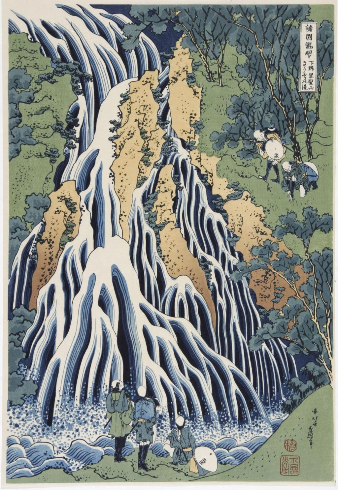

<head>
<meta charset="UTF-8" />
<meta name="keywords" content="drawing, painting" />
<meta name="description" content="drawings by Sunjy" />
<title>Sunjy</title>
<link rel="shortcut icon" type="image/x-icon" href="../../mImages/mCommon/favicon.ico" media="screen" />
<link rel="stylesheet" type="text/css" href="../../mCsses/mCommon/mCssA.css" />
<link rel="stylesheet" type="text/css" href="../../mCsses/mCommon/mCssB.css" />
<link rel="stylesheet" type="text/css" href="../../mCsses/mCommon/mCssC.css" />
<link rel="stylesheet" type="text/css" href="../../mCsses/mCommon/mCssD.css" />
<link rel="stylesheet" type="text/css" href="../../mCsses/mContent/mCssA.css" />
<link rel="stylesheet" type="text/css" href="../../mCsses/mContent/mCssB.css" />
<link rel="stylesheet" type="text/css" href="../../mCsses/mContent/mCssC.css" />
<link rel="stylesheet" type="text/css" href="../../mCsses/mContent/mCssD.css" />
</head>
<script type="text/javascript" src="../../mScripts/mContent/mContentAA.js" /></script>
<script type="text/javascript" src="../../mScripts/mContent/mContentAB.js" /></script>
<script type="text/javascript" src="../../mScripts/mContent/mContentAC.js" /></script>
<script type="text/javascript" src="../../mScripts/mContent/mContentAD.js" /></script>
<script type="text/javascript"></script> 
<script type="text/javascript">
document.write('<div class="mImgAbsolute"></div>');
/*
document.write('<p class="mFontSizeBColor" />From a white paper...</p>');
document.write('<table class="center"><tr><td>');
document.write('');
document.write('</td></tr></table>');
*/
</script>


<script type="text/javascript">
document.write('<p class="mFontSizeBColor" />Kirifuri Waterfall at Kurokami Mountain in Shimotsuke </p>');
document.write('<p class="mFontSizeSColor" />Kirifuri Waterfall at Kurokami Mountain in Shimotsuke by Katsushika Hokusai.<br><br>Falling Mist Waterfall (Kirifuri no taki), on Mount Kurokami (“Black-hair”) in Shimotsuke province (now part of Tochigi prefecture) is one of the famous falls of the mountainous Nikkö area.<br><br>The Waterfall descends about 100 feet in two steps as it falls, the water, broken up by the cliff, spreads itself into a moving tapestry of many cascades, creating a mist air.<br><br>Hokusai presents the falls in an extreme close-up view as a mystical pattern. The falling streams in the pool are superbly are printed in shades of blue. <br><br>The travelers looking up from below, are dwarfed by the scale of the waterfalls while on the right, other climbers are making the steep climb to the top. <br></p>');
document.write('<table class="center" /><tr><td>');
document.write('<br>Falling Mist Waterfall (Kirifuri no taki), on Mount Kurokami (“Black-hair”) in Shimotsuke province (now part of Tochigi prefecture) is one of the famous falls of the mountainous Nikkö area.<br><br>The Waterfall descends about 100 feet in two steps as it falls, the water, broken up by the cliff, spreads itself into a moving tapestry of many cascades, creating a mist air.<br><br>Hokusai presents the falls in an extreme close-up view as a mystical pattern. The falling streams in the pool are superbly are printed in shades of blue. <br><br>The travelers looking up from below, are dwarfed by the scale of the waterfalls while on the right, other climbers are making the steep climb to the top. <br>" />');
document.write('</td></tr></table>');
</script>


